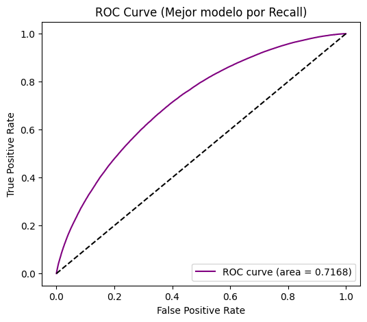
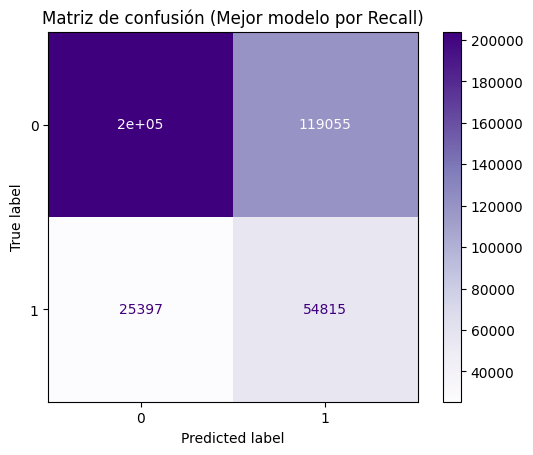

from pyspark.sql import SparkSession
from pyspark.sql.types import StructType, StructField, StringType, IntegerType
import os
from pyspark.ml import Pipeline
from pyspark.ml.feature import StringIndexer, OneHotEncoder, VectorAssembler, StandardScaler
import time
from pyspark.ml.classification import MultilayerPerceptronClassifier
from pyspark.ml.evaluation import BinaryClassificationEvaluator, MulticlassClassificationEvaluator
from pyspark.sql import functions as F
import matplotlib.pyplot as plt
import seaborn as sns
import pandas as pd
import numpy as np
from sklearn.metrics import roc_curve, auc as sk_auc, confusion_matrix, ConfusionMatrixDisplay, precision_score
from pyspark.sql.functions import col
PySpark#
# 1. Crear una SparkSession
spark = SparkSession.builder \
.appName("MiApp") \
.config("spark.driver.memory", "4g") \
.getOrCreate()
# 2. Leer el archivo
df_spark = spark.read.csv("data/df_final.csv", header=True, inferSchema=True)
df_spark.show(5)
[Stage 15368:=============> (3 + 9) / 12]
+-----------+----------+---------+----------+--------------+----------+-------------------+--------+------------------+-----+-----------+----------------+--------------+--------------------------+----------------+--------------+------------+----------------+-----------+--------------+------------------------+-----------+---------------------+--------------+--------+--------------------+---------------------+---------------------+---------+----------------+------------+------------------+------------------+--------------------+---------+-----------------+-------+
|funded_amnt| term|sub_grade|emp_length|home_ownership|annual_inc|verification_status| issue_d| purpose| dti|delinq_2yrs|earliest_cr_line|inq_last_6mths|collections_12_mths_ex_med|application_type|acc_now_delinq|tot_coll_amt|total_rev_hi_lim|avg_cur_bal|bc_open_to_buy|chargeoff_within_12_mths|delinq_amnt|mo_sin_rcnt_rev_tl_op|mo_sin_rcnt_tl|mort_acc|mths_since_recent_bc|mths_since_recent_inq|num_accts_ever_120_pd|num_il_tl|num_tl_120dpd_2m|num_tl_30dpd|num_tl_90g_dpd_24m|num_tl_op_past_12m|pub_rec_bankruptcies|tax_liens|total_bal_ex_mort|default|
+-----------+----------+---------+----------+--------------+----------+-------------------+--------+------------------+-----+-----------+----------------+--------------+--------------------------+----------------+--------------+------------+----------------+-----------+--------------+------------------------+-----------+---------------------+--------------+--------+--------------------+---------------------+---------------------+---------+----------------+------------+------------------+------------------+--------------------+---------+-----------------+-------+
| 3600.0| 36 months| C4| 10.0| MORTGAGE| 55000.0| Not Verified|Dec-2015|debt_consolidation| 5.91| 0.0| Aug-2003| 1.0| 0.0| Individual| 0.0| 722.0| 9300.0| 20701.0| 1506.0| 0.0| 0.0| 3.0| 3.0| 1.0| 4.0| 4.0| 2.0| 3.0| 0.0| 0.0| 0.0| 3.0| 0.0| 0.0| 7746.0| 0.0|
| 24700.0| 36 months| C1| 10.0| MORTGAGE| 65000.0| Not Verified|Dec-2015| small_business|16.06| 1.0| Dec-1999| 4.0| 0.0| Individual| 0.0| 0.0| 111800.0| 9733.0| 57830.0| 0.0| 0.0| 2.0| 2.0| 4.0| 2.0| 0.0| 0.0| 6.0| 0.0| 0.0| 0.0| 2.0| 0.0| 0.0| 39475.0| 0.0|
| 20000.0| 60 months| B4| 10.0| MORTGAGE| 63000.0| Not Verified|Dec-2015| home_improvement|10.78| 0.0| Aug-2000| 0.0| 0.0| Joint App| 0.0| 0.0| 14000.0| 31617.0| 2737.0| 0.0| 0.0| 14.0| 14.0| 5.0| 101.0| 10.0| 0.0| 6.0| 0.0| 0.0| 0.0| 0.0| 0.0| 0.0| 18696.0| 0.0|
| 10400.0| 60 months| F1| 3.0| MORTGAGE| 104433.0| Source Verified|Dec-2015| major_purchase|25.37| 1.0| Jun-1998| 3.0| 0.0| Individual| 0.0| 0.0| 34000.0| 27644.0| 4567.0| 0.0| 0.0| 4.0| 4.0| 6.0| 4.0| 1.0| 0.0| 10.0| 0.0| 0.0| 0.0| 4.0| 0.0| 0.0| 95768.0| 0.0|
| 11950.0| 36 months| C3| 4.0| RENT| 34000.0| Source Verified|Dec-2015|debt_consolidation| 10.2| 0.0| Oct-1987| 0.0| 0.0| Individual| 0.0| 0.0| 12900.0| 2560.0| 844.0| 0.0| 0.0| 32.0| 32.0| 0.0| 36.0| 5.0| 0.0| 2.0| 0.0| 0.0| 0.0| 0.0| 0.0| 0.0| 12798.0| 0.0|
+-----------+----------+---------+----------+--------------+----------+-------------------+--------+------------------+-----+-----------+----------------+--------------+--------------------------+----------------+--------------+------------+----------------+-----------+--------------+------------------------+-----------+---------------------+--------------+--------+--------------------+---------------------+---------------------+---------+----------------+------------+------------------+------------------+--------------------+---------+-----------------+-------+
only showing top 5 rows
# Definir las columnas
categorical_cols = [
'term',
'sub_grade',
'emp_length',
'home_ownership',
'verification_status',
'purpose',
'application_type'
]
numerical_cols = [
'funded_amnt',
'annual_inc',
'dti',
'delinq_2yrs',
'inq_last_6mths',
'collections_12_mths_ex_med',
'acc_now_delinq',
'tot_coll_amt',
'total_rev_hi_lim',
'avg_cur_bal',
'bc_open_to_buy',
'chargeoff_within_12_mths',
'delinq_amnt',
'mo_sin_rcnt_rev_tl_op',
'mo_sin_rcnt_tl',
'mort_acc',
'mths_since_recent_bc',
'mths_since_recent_inq',
'num_accts_ever_120_pd',
'num_il_tl',
'num_tl_120dpd_2m',
'num_tl_30dpd',
'num_tl_90g_dpd_24m',
'num_tl_op_past_12m',
'pub_rec_bankruptcies',
'tax_liens',
'total_bal_ex_mort'
]
label_col = "default"
Pipeline de Transformación de Features#
# 3. Pipeline de transformación
indexers = [StringIndexer(inputCol=col, outputCol=f"{col}_index") for col in categorical_cols]
encoders = [OneHotEncoder(inputCol=f"{col}_index", outputCol=f"{col}_encoded") for col in categorical_cols]
# Ensamblar numéricas
assembler_num = VectorAssembler(inputCols=numerical_cols, outputCol="num_features")
scaler = StandardScaler(inputCol="num_features", outputCol="scaled_features")
# Ensamblar todas las features
assembler_all = VectorAssembler(
inputCols=["scaled_features"] + [f"{col}_encoded" for col in categorical_cols],
outputCol="features"
)
pipeline = Pipeline(stages=indexers + encoders + [assembler_num, scaler, assembler_all])
# 4. Transformar los datos
pipeline_model = pipeline.fit(df_spark)
df_transformed = pipeline_model.transform(df_spark)
División del dataset#
Aquí usamos sampleBy para realizar una división estratificada de los datos, asegurando que cada clase de la variable objetivo esté representada de forma proporcional tanto en el conjunto de entrenamiento como en el de prueba.
# 5. División estratificada train/test
# Obtener las clases únicas
classes = df_transformed.select(label_col).distinct().rdd.flatMap(lambda x: x).collect()
# Definir fracción 0.7 para cada clase
fractions = {c: 0.7 for c in classes}
# Sample estratificado
train_df = df_transformed.sampleBy(label_col, fractions, seed=42)
test_df = df_transformed.subtract(train_df)
print("Train size:", train_df.count(), "Test size:", test_df.count())
[Stage 15425:==================================================> (18 + 1) / 19]
Train size: 942296 Test size: 403014
from pyspark.sql import functions as F
def check_distribution(df, label_col, name="dataset"):
dist = df.groupBy(label_col).count()
total = df.count()
dist = dist.withColumn("proportion", F.col("count") / total)
print(f"Distribución en {name}:")
dist.show()
# Revisar
check_distribution(df_transformed, label_col, "original")
check_distribution(train_df, label_col, "train")
check_distribution(test_df, label_col, "test")
Distribución en original:
+-------+-------+-------------------+
|default| count| proportion|
+-------+-------+-------------------+
| 0.0|1076751| 0.8003738915194267|
| 1.0| 268559|0.19962610848057324|
+-------+-------+-------------------+
Distribución en train:
+-------+------+-------------------+
|default| count| proportion|
+-------+------+-------------------+
| 0.0|753949| 0.8001190708652058|
| 1.0|188347|0.19988092913479416|
+-------+------+-------------------+
Distribución en test:
[Stage 15465:=========================================> (15 + 4) / 19]
+-------+------+-------------------+
|default| count| proportion|
+-------+------+-------------------+
| 0.0|322802| 0.8009696933605284|
| 1.0| 80212|0.19903030663947158|
+-------+------+-------------------+
Oversampling#
Para abordar el desbalance de clases y evitar que el modelo aprenda patrones principalmente de la clase mayoritaria, usamos oversampling. Es decir, duplicamos la clase minoritaria para que tenga un número de registros similar a la clase mayoritaria
# Contar cuántos registros hay en cada clase
clase_counts = train_df.groupBy(label_col).count().collect()
clase_mayoritaria = max(clase_counts, key=lambda x: x["count"])["default"]
clase_menoritaria = min(clase_counts, key=lambda x: x["count"])["default"]
mayor_count = max(clase_counts, key=lambda x: x["count"])["count"]
menor_count = min(clase_counts, key=lambda x: x["count"])["count"]
print(f"Antes del balanceo -> Mayoritaria: {mayor_count} | Minoritaria: {menor_count}")
# Separar datasets
df_mayoritaria = train_df.filter(col(label_col) == clase_mayoritaria)
df_menoritaria = train_df.filter(col(label_col) == clase_menoritaria)
# Calcular factor de oversampling
factor = int(mayor_count / menor_count)
# Repetir la clase minoritaria
df_menor_oversampled = df_menoritaria
for _ in range(factor - 1):
df_menor_oversampled = df_menor_oversampled.union(df_menoritaria)
# Dataset balanceado final
train_df = df_mayoritaria.union(df_menor_oversampled)
print("Después del balanceo:")
train_df.groupBy(label_col).count().show()
Antes del balanceo -> Mayoritaria: 753949 | Minoritaria: 188347
Después del balanceo:
[Stage 15478:=========================================> (48 + 12) / 60]
+-------+------+
|default| count|
+-------+------+
| 0.0|753949|
| 1.0|753388|
+-------+------+
Modelado#
num_features = len(df_transformed.select("features").first()[0])
layers_list = [
[num_features, 10, 2],
[num_features, 50, 2],
[num_features, 100, 2]
]
step_sizes = [0.1, 0.01, 0.001]
max_iters = [100, 200]
binary_eval = BinaryClassificationEvaluator(labelCol="default", metricName="areaUnderROC")
accuracy_eval = MulticlassClassificationEvaluator(labelCol="default", metricName="accuracy")
f1_eval = MulticlassClassificationEvaluator(labelCol="default", metricName="f1")
recall_eval = MulticlassClassificationEvaluator(labelCol="default", predictionCol="prediction",
metricName="recallByLabel", metricLabel=1)
# ========================================
# 3. Entrenamiento y evaluación de modelos
# ========================================
results = []
for layers in layers_list:
for step in step_sizes:
for iters in max_iters:
print(f"\nEntrenando modelo con layers={layers}, stepSize={step}, maxIter={iters}")
# Instanciar modelo MLP
mlp = MultilayerPerceptronClassifier(
featuresCol="features",
labelCol="default",
layers=layers,
blockSize=128,
seed=42,
maxIter=iters,
stepSize=step
)
# Tiempo de entrenamiento
start_time = time.time()
model = mlp.fit(train_df)
train_time = time.time() - start_time
# Tiempo de predicción
start_time = time.time()
predictions = model.transform(test_df)
pred_time = time.time() - start_time
# Métricas
auc = binary_eval.evaluate(predictions)
acc = accuracy_eval.evaluate(predictions)
f1 = f1_eval.evaluate(predictions)
recall = recall_eval.evaluate(predictions)
results.append({
"layers": layers,
"stepSize": step,
"maxIter": iters,
"AUC": auc,
"Accuracy": acc,
"F1": f1,
"Recall": recall,
"train_time": train_time,
"pred_time": pred_time,
"model": model,
"predictions": predictions
})
# ========================================
# 4. Selección del mejor modelo por Recall
# ========================================
best_result = max(results, key=lambda x: x["Recall"])
best_model = best_result["model"]
best_preds = best_result["predictions"]
print("\n===== Mejor modelo (según Recall) =====")
print(f"Layers: {best_result['layers']}, StepSize: {best_result['stepSize']}, MaxIter: {best_result['maxIter']}")
print(f"AUC: {best_result['AUC']:.4f} | Accuracy: {best_result['Accuracy']:.4f} | "
f"F1: {best_result['F1']:.4f} | Recall: {best_result['Recall']:.4f}")
print(f"Train time: {best_result['train_time']:.2f}s | Pred time: {best_result['pred_time']:.2f}s")
# ========================================
# 5. Gráficos del mejor modelo
# ========================================
# --- ROC Curve ---
y_true = [row["default"] for row in best_preds.select("default").collect()]
y_score = [float(row["probability"][1]) for row in best_preds.select("probability").collect()]
fpr, tpr, _ = roc_curve(y_true, y_score)
roc_auc = sk_auc(fpr, tpr)
plt.figure(figsize=(6, 5))
plt.plot(fpr, tpr, label=f"ROC curve (area = {roc_auc:.4f})", color="purple")
plt.plot([0, 1], [0, 1], "k--")
plt.xlabel("False Positive Rate")
plt.ylabel("True Positive Rate")
plt.title("ROC Curve (Mejor modelo por Recall)")
plt.legend(loc="lower right")
plt.show()
# --- Matriz de confusión ---
y_pred = [int(row["prediction"]) for row in best_preds.select("prediction").collect()]
cm = confusion_matrix(y_true, y_pred, labels=[0, 1])
disp = ConfusionMatrixDisplay(confusion_matrix=cm, display_labels=[0, 1])
disp.plot(cmap="Purples")
plt.title("Matriz de confusión (Mejor modelo por Recall)")
plt.show()
Entrenando modelo con layers=[93, 10, 2], stepSize=0.1, maxIter=100
Entrenando modelo con layers=[93, 10, 2], stepSize=0.1, maxIter=200
Entrenando modelo con layers=[93, 10, 2], stepSize=0.01, maxIter=100
Entrenando modelo con layers=[93, 10, 2], stepSize=0.01, maxIter=200
Entrenando modelo con layers=[93, 10, 2], stepSize=0.001, maxIter=100
Entrenando modelo con layers=[93, 10, 2], stepSize=0.001, maxIter=200
Entrenando modelo con layers=[93, 50, 2], stepSize=0.1, maxIter=100
Entrenando modelo con layers=[93, 50, 2], stepSize=0.1, maxIter=200
Entrenando modelo con layers=[93, 50, 2], stepSize=0.01, maxIter=100
Entrenando modelo con layers=[93, 50, 2], stepSize=0.01, maxIter=200
Entrenando modelo con layers=[93, 50, 2], stepSize=0.001, maxIter=100
[Stage 12056:> (0 + 12) / 19]
[12301.198s][warning][gc,alloc] Executor task launch worker for task 10.0 in stage 12056.0 (TID 183476): Retried waiting for GCLocker too often allocating 1048576 words
25/08/20 20:31:32 WARN TaskMemoryManager: Failed to allocate a page (8388592 bytes), try again.
Entrenando modelo con layers=[93, 50, 2], stepSize=0.001, maxIter=200
Entrenando modelo con layers=[93, 100, 2], stepSize=0.1, maxIter=100
Entrenando modelo con layers=[93, 100, 2], stepSize=0.1, maxIter=200
Entrenando modelo con layers=[93, 100, 2], stepSize=0.01, maxIter=100
Entrenando modelo con layers=[93, 100, 2], stepSize=0.01, maxIter=200
Entrenando modelo con layers=[93, 100, 2], stepSize=0.001, maxIter=100
Entrenando modelo con layers=[93, 100, 2], stepSize=0.001, maxIter=200
===== Mejor modelo (según Recall) =====
Layers: [93, 50, 2], StepSize: 0.001, MaxIter: 100
AUC: 0.7078 | Accuracy: 0.6416 | F1: 0.6772 | Recall: 0.6834
Train time: 83.47s | Pred time: 0.01s

